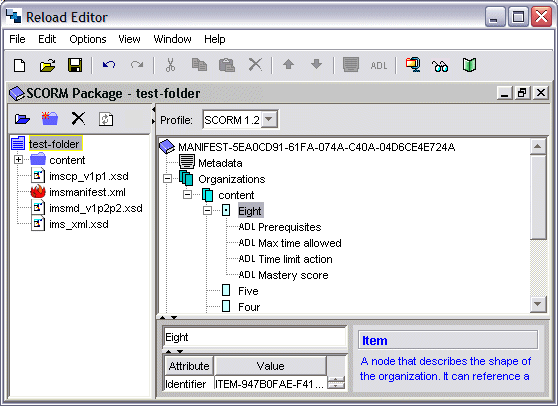

SCORM Elements
A new feature in v1.1 of the RELOAD Editor is support for editing SCORM 1.2 packages. SCORM (the Shareable Content Object Reference Model) builds heavily on the IMS Content Packaging specification and so IMS CP and SCORM v1.2 packages are very similar, but there a few important differences:
This section will describe the SCORM v1.2 specific features.
Types of SCORM Package
SCORM Packages can be used for two purposes - either to store and transport content as 'assets' for future use, or as organisations of content for delivery via a Learner Management System LMS.
SCORM Resource Packages are the simpler of the two package types - the manifest provides content metadata and describes the files which make up the resource, but the organization element is empty and no information about how the content is structured is kept as can be seen in the following screenshot of a valid SCORM Resource Package.
SCORM Content Aggregation Packages are more complex, and in this case at least one organization must be available to describe how the content is structured. SCORM Content Aggregation Packages are similar to IMS Content Packages, but can make use of the extra elements defined by the SCORM v1.2 specification.
SCORM Metadata
SCORM Metadata is based extensively on the IMS LRM specification, and ADL (Advanced Distributed Learning) do not impose a specific application profile. The difference between SCORM Metadata and IMS Metadata is that SCORM Metadata can be kept in a file external to the content package.
If you are creating a SCORM v1.2 package and wish to make use of externally held metadata, then you must use the ADL:Location element.
SCORM Specific Elements
The main area where SCORM v1.2 differs from IMS CP v1.1.3 is in the support it provides for interaction with Learner Management Systems (LMSs). An extra five elements are defined which describe these interactions, and the LMS can use these elements to define a set of rules which control a learners progression through content to be defined. Each of these elements is optional.
prerequisites
This element defines any other Item which the learner must have completed satisfactorily before they are allowed to access the current Item. This can be used to define multiple routes through learning materials.
maxtimeallowed
This is the time (in seconds) that a LMS would permit access to the item for. For instance you may wish to restrict access to a simple assessment, forcing all learners to complete within 15 minutes.
timelimitaction
This is the action specified if the 'max time allowed' is exceeded. The user is provided with a choice of four built in actions:
datafromlms
This element allows initialisation data to be sent from the LMS to the Item on launch.
masteryscore
This is a normalised score (between 0 and 100) which must be achieved to indicate satisfactory completion of an item.
Once an Item carries SCORM infromation, its Icon changes from a simple rectangle to one containing a central spot. In addition a plus sign appears to the left side of the Item and when expanded, a list of the SCORM elements utilised appears. An expanded Item node is shown below:
